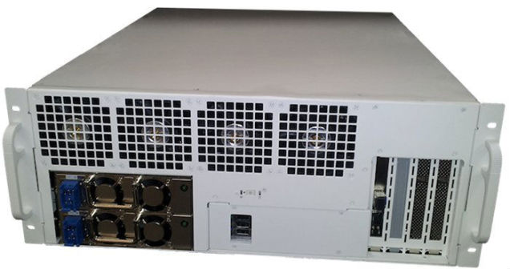
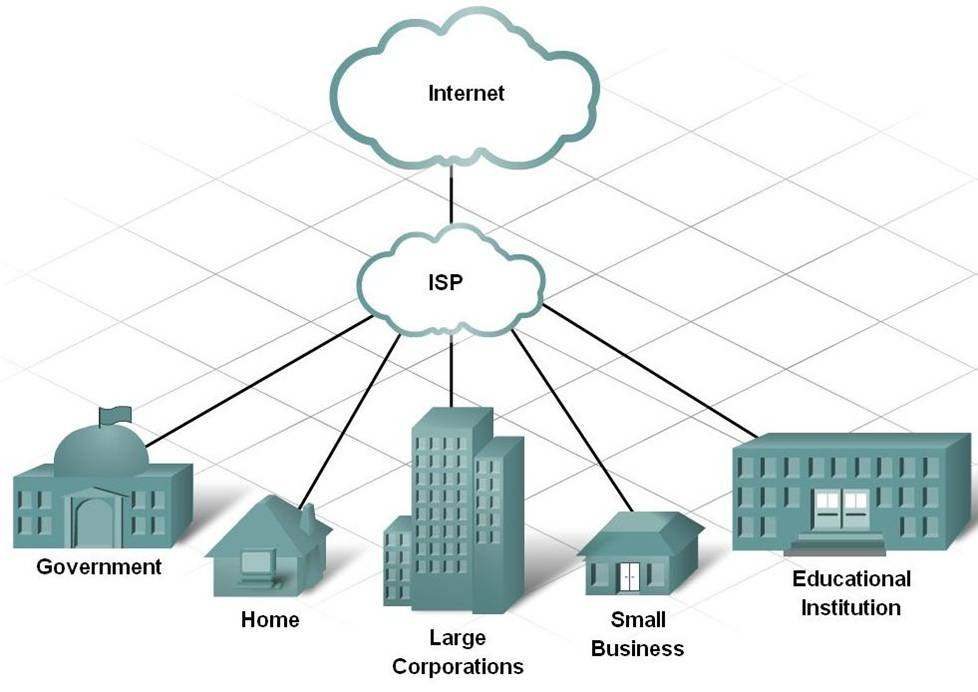
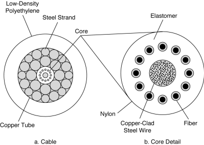
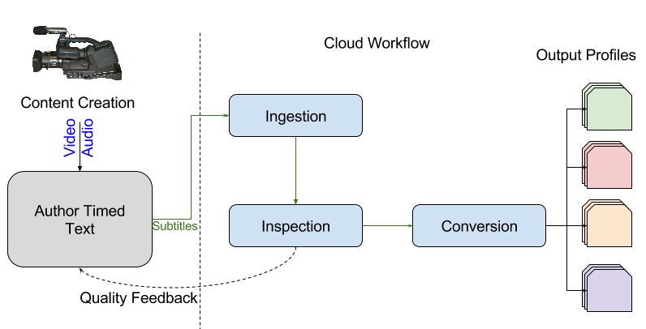
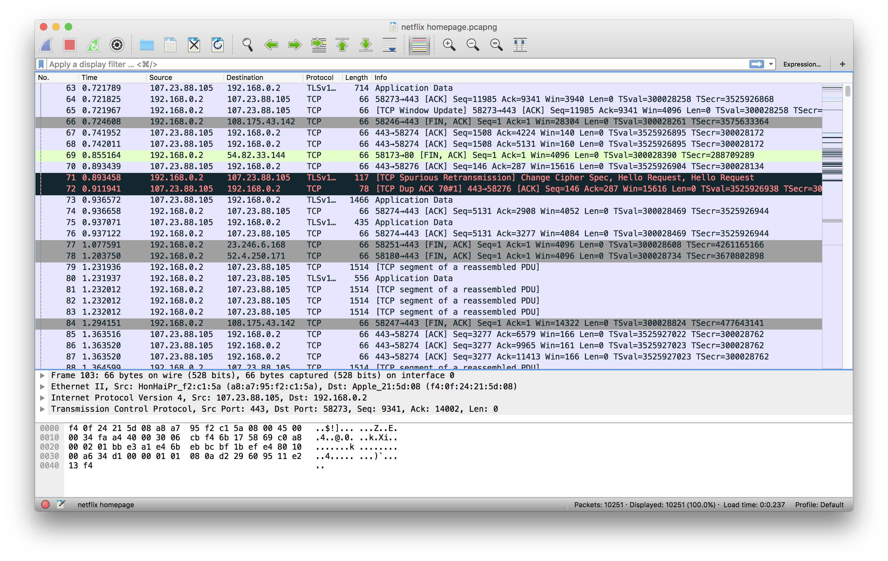
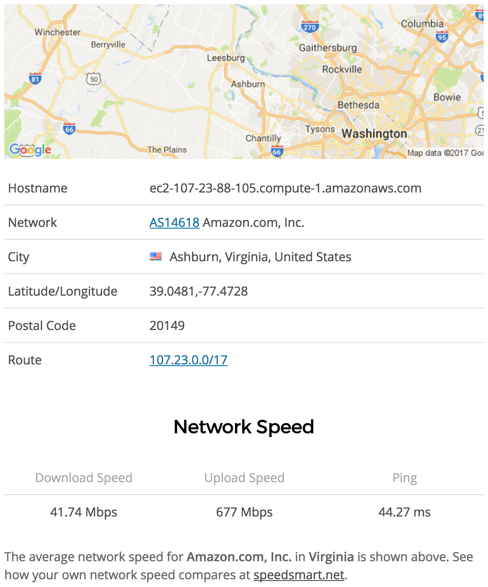
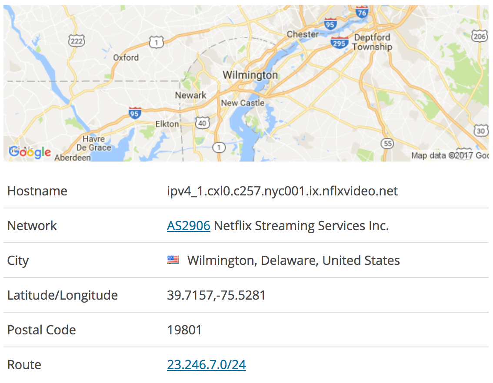

The End Device
Your MacBook or iPad or SmartTV. Data packets are decoded at the wireless interface. Software within your browser is rendering these into video and audio.
11:30PM-12:30AM (now)The Wireless Hop
The local wireless network, centered by a wireless access point. Here, video data streaming in from the network is encoded into 802.11 frames and then pumped throughout your local environment as radio waves.
11:30PM-12:30AM (now)The Open Connect Appliance (OCA)
The physical content server that was installed by Netflix at your local ISP's data center. It contains multiple hard drives which together hold between 100 and 200TB of Netflix content. This is the literal machine that is serving your video stream to you in real-time. Netflix gave this box to your ISP for free, and your ISP agrees to pay for the electricity this server uses because it spares them of the costly Netflix thru-traffic they would be handling otherwise. Every day, this server downloads ~7.5Tb of new video data from Netflix during off-peak hours, which are typically 2:00AM to noon, your local time. Your episode, as well as the rest of the season, came in on this shipment. Actual OCA hardware depicted below.
 2AM-12:00PM (earlier today), 11:30PM - 12:30AM (now)Your Internet Service Provider (ISP)
The company to whom you pay a monthly bill, and who operates and maintains the network infrastructure in your local area. Netflix has partnered with your ISP by installing OCAs in their regional data centers or internet interconnection facilities. One OCA somewhere in your ISP's network received the episode you've chosen to stream within a content shipment from Netflix's Transcoding Repository. This OCA then replicated the files in this shipment onto every other OCA in your ISP's network, including the one streaming video to your device.
 2:00AM - 12:00PM (earlier today), 11:30PM - 12:30AM (now)The Internet Backbone
The vast network of fiber and coaxial cabling that connects ISPs together. Your stream is not currently migrating across these cables. If it were, your stream would probably have some buffering issues. However, the raw data for your stream was pumped through these cables to a receiver OCA in your ISP's network during an off-peak time to avoid competing with other backbone traffic.
 2:00AM - 12:00PM (earlier today)The Netflix Transcoding Repository
A centralized Netflix operations center somewhere in North America, likely in California. Here, all of Netflix's content is encoded as video files and routed towards certain global regions before being deployed across Internet backbone links. This is the origin of all physical video files, including tonight's episode, before they are forward-positioned around the world by Open Connect. Image taken from Netflix's Open Connect press release.
 yesterday, approximatelyPutting the model into practice
On May 7th at 11:30PM I engaged with this conceptual model by streaming an hour of Netflix from my bedroom in New York City. As I streamed, I ran the packet tracing program Wireshark to monitor the data coming onto my Macbook Pro's WiFi interface.
 As the Netflix homepage loaded into my browser, I observed the IP addresses that were appearing on my wireless packet trace. 107.23.88.105 was the most common address I saw, so I used an IP geolocation database to get some more information on this machine. This address was in a Virginia data center, owned by Amazon. This is what I expected to find, as I learned in my research for this project that Netflix hosts all of their backend operations on Amazon's public cloud, i.e. everything that happens up until the user hits play. This is the machine where my recommendations were being calculated and served from.
I eventually settled on an episode, a relatively new Netflix original titled Old Baby which appeared under the homepage's "Trending" section. As the stream began, the output on my wireless trace immediately filled with packets from a new address, 23.246.7.157. I also saw packets coming from this same subnet (23.246.7.XXX) as I scrolled past video previews embedded on the homepage.  This machine is almost certainly an OCA positioned at some network exchange site in Wilmington, Delaware. This location is fairly closer to NYC than Virginia, illustrating the Open Connect network's forward positioning strategy. To put the latency benefits of this positioning into perspective, I ran an experiment with a cloud server I have access to in Amazon's Oregon location. I streamed a 720p video from this Oregon server (my experimental OCA) and found that it only took 40ms for each frame to reach my computer. I used the UNIX 'ping' command to measure the network latency between me and my OCA, 23.246.7.157. The average ping round trip time was around 50ms, indicating approximately 25ms for the one-way trip my streamed video frames were making. The Wilmington OCA's speed improvement is rather insignificant or inconsequential from my individual perspective, but the fact that it comes as a billion-dollar investment shines light on the sheer scale that Netflix engineers are considering.